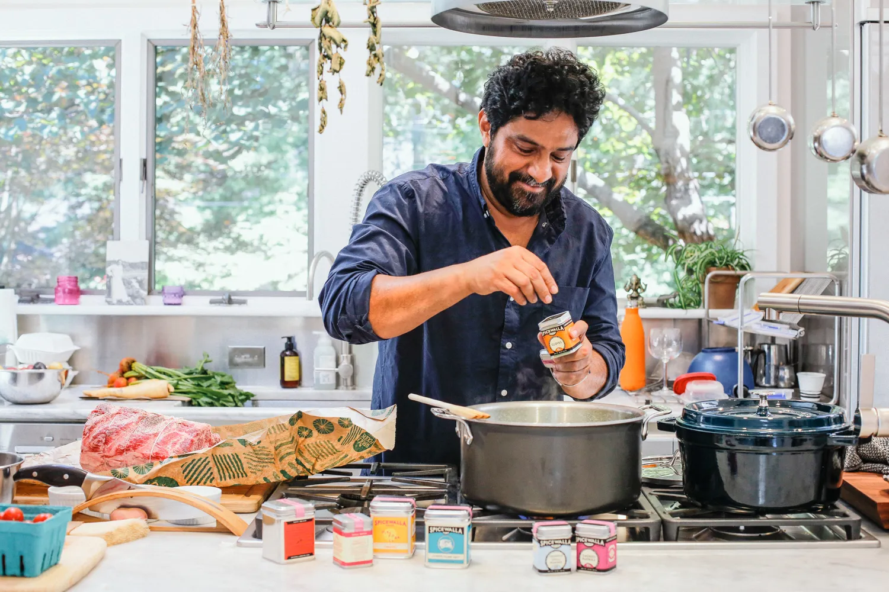
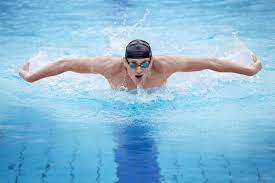
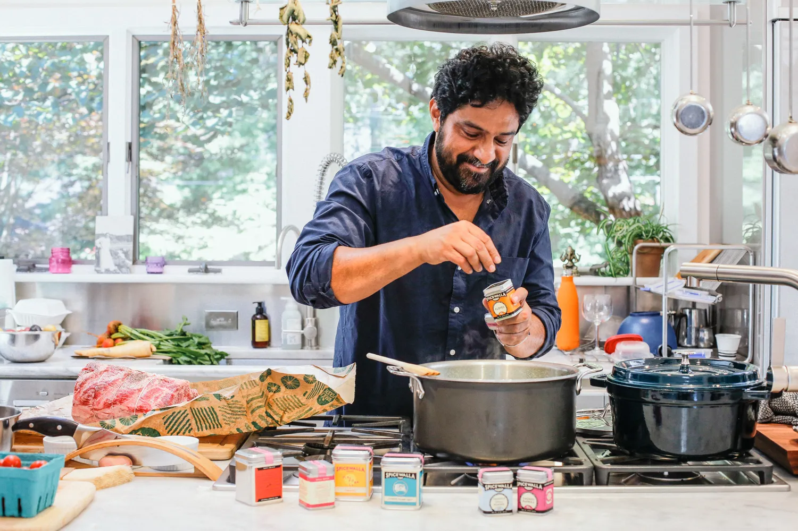
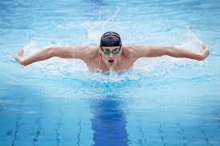
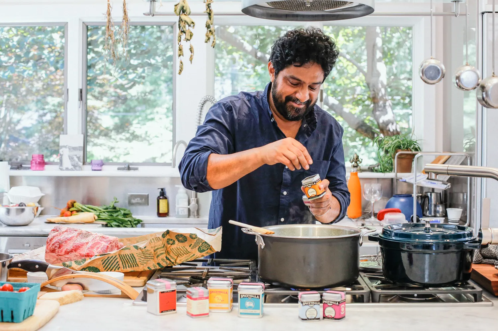
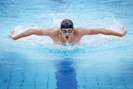

Passions
Mes passions sont variées et il y en a pour tous les goûts.
Tout d'abord,
j'aime beaucoup lire des livres, surtout des romans d'aventure et de science-fiction, je
suis également un grand amateur de films et de séries, j'aime passer du temps à les regarder
et à en discuter avec mes amis.
Le tennis est un autre de mes sports préférés, je pratique
régulièrement et j'aime suivre les matchs des grands joueurs, je suis également un fan de
football et de basketball, j'aime regarder les matchs et suivre les résultats des équipes
que je supporte.
La natation est également une passion pour moi, je pratique régulièrement
pour rester en forme.
En plus de cela, je suis un grand passionné de voyage, je pratique régulièrement la course à
pied et le vélo , j'aime découvrir de nouveaux endroits, de nouvelles cultures et de
nouvelles personnes.
Les jeux vidéo sont également une source de divertissement pour moi,
j'aime passer du temps à y jouer et à découvrir de nouveaux jeux. Enfin, j'aime la cuisine,
je prends plaisir à cuisiner de nouvelles recettes et à les partager avec mes proches et
puis j'aime écouter de la musique, cela me permet de me détendre et de me ressourcer.

